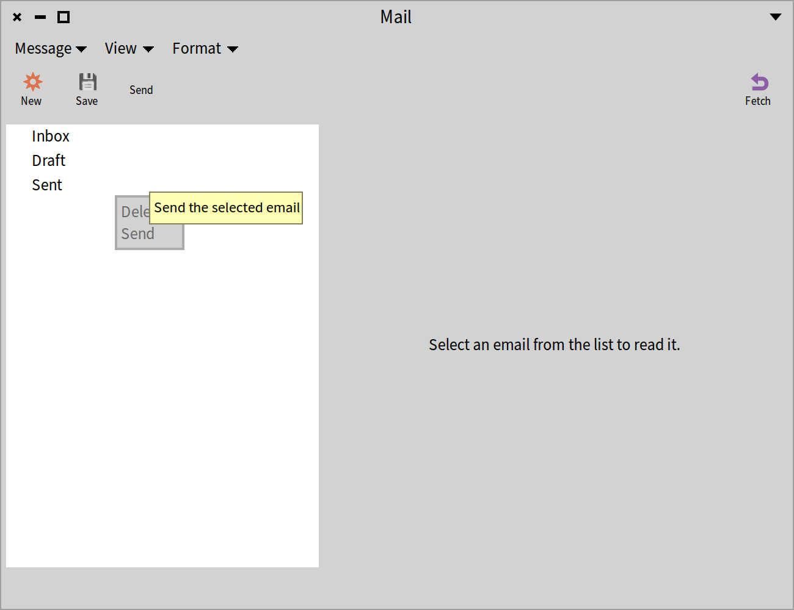
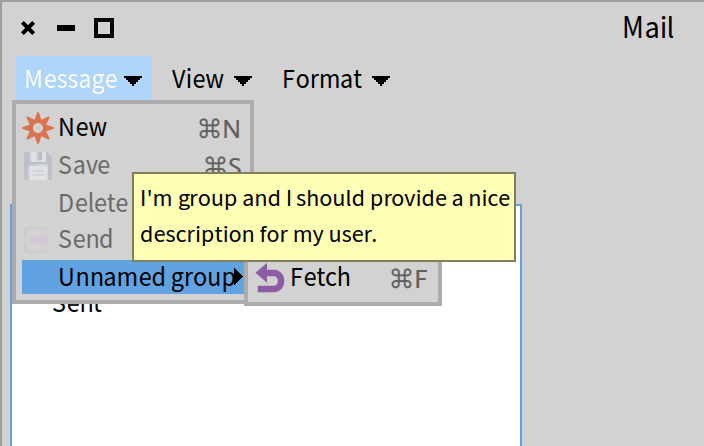
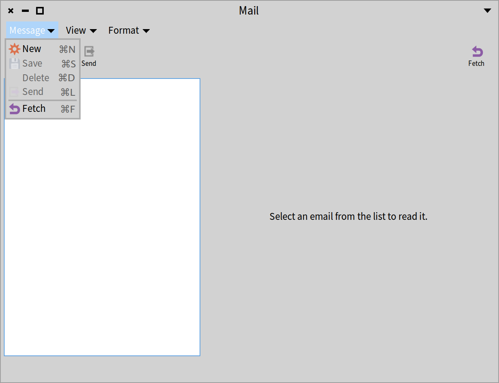
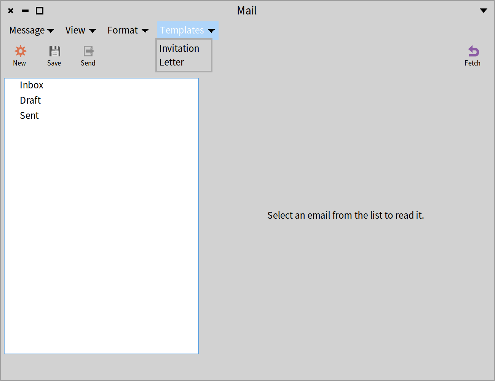
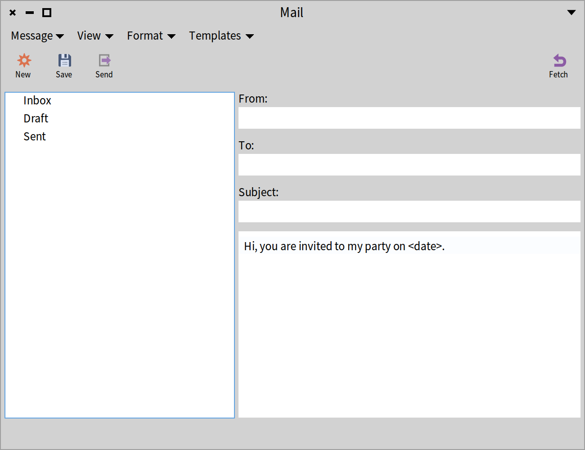
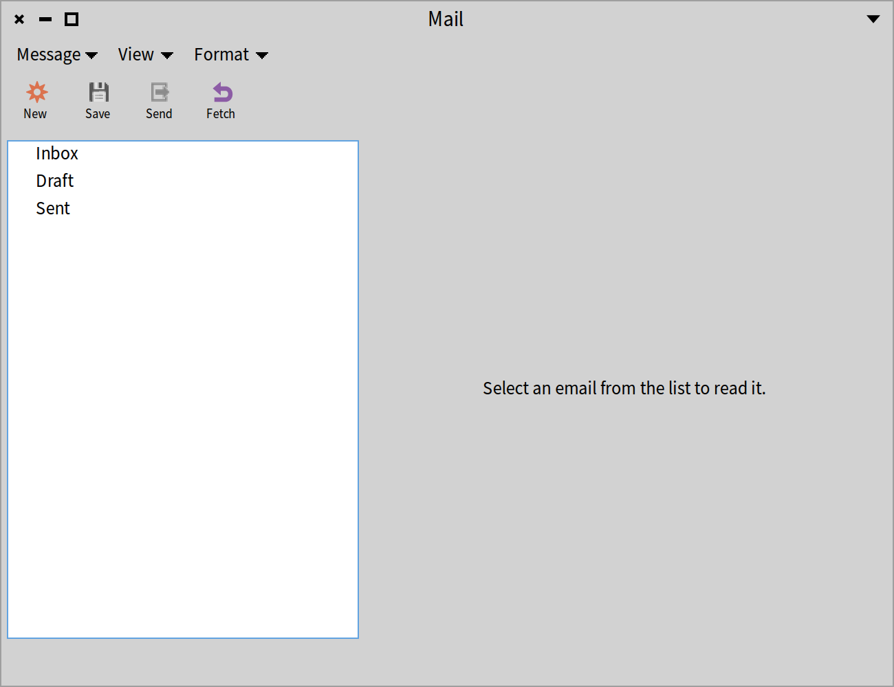
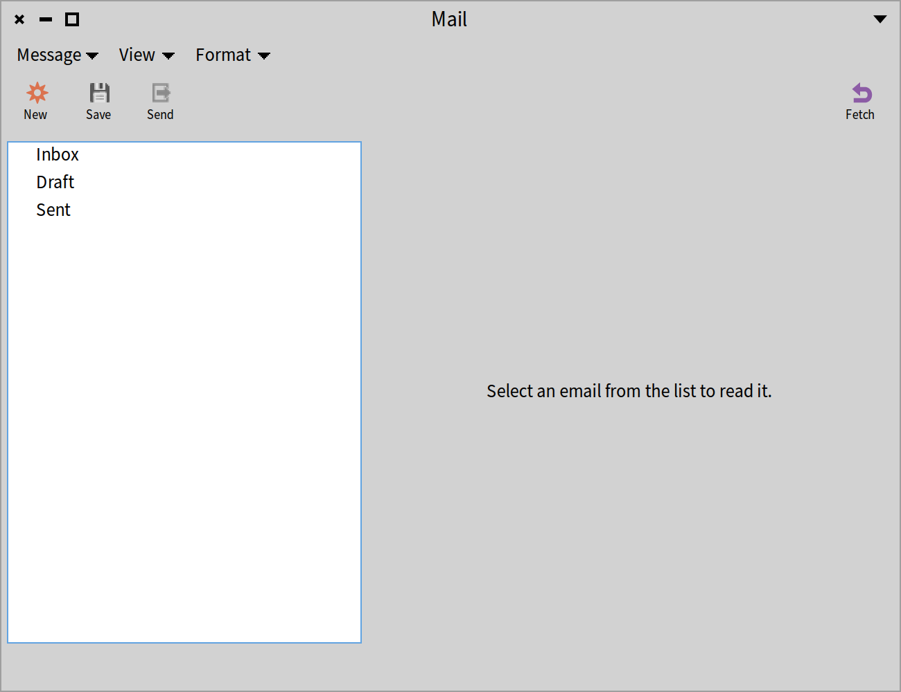

21 Commander: A powerful and simple command framework
Commander was a library originally developed by Denis Kudriashov. Commander 2.0 is the second iteration of that library. It was designed and developed by Julien Delplanque and Stéphane Ducasse. Note that Commander 2.0 is not compatible with Commander but it is really easy to migrate from Commander to Commander 2.0. We describe Commander 2.0 in the context of Spec. From now on, when we mention Commander we refer to Commander 2.0.
To explain the concepts, we will revisit the Mail Application that we introduced in Chapter 14 and extended in Chapter 15. You can load the code as explained in the first chapter of this book.
21.1 Commands
Commander models application actions as first-class objects following the Command design pattern. With Commander, you can express commands and use them to generate menus and toolbars, but also to script applications from the command line.
Every action is implemented as a separate command class (subclass of CmCommand) with an execute method and the state required for execution.
We will show later that for a UI framework, we need more information such as an icon and shortcut description. In addition, we will present how commands can be decorated with extra functionality in an extensible way.
21.2 Defining commands
A command is a simple object. It is an instance of a subclass of the class CmCommand. It has a description and a name. The name can be either static or dynamic as we will show later on. In addition, it has a context from which it extracts information to execute itself. In its basic form, there is no more than that.
Let us have a look at examples. We will define some commands for the Mail application and illustrate how they can be turned into menus, a menubar and a toolbar.
21.3 Adding a common superclass for the command classes
For convenience reasons, we define a common superclass of all the commands of the Mail application.
CmCommand << #MailClientCommand
slots: {};
package: 'CodeOfSpec20Book'We define a simple helper method to make the code more readable:
MailClientCommand >> mailClientPresenter
^ self context21.4 Adding the main commands
We implement subclasses of MailClientCommand to define the commands to create a new mail, to save a mail, to send a mail, to delete a mail, and to fetch mails.
21.4.1 NewMailCommand
MailClientCommand << #NewMailCommand
slots: {};
package: 'CodeOfSpec20Book'In the initialize method, we set the name and the description.
NewMailCommand >> initialize
super initialize.
self
name: 'New';
description: 'Create a new email'The execute method is the most important method of a command as it does the actual execution. We use the helper method mailClientPresenter that we defined in the superclass. The method sends the newMail message that we defined in Chapter 14.
NewMailCommand >> execute
self mailClientPresenter newMailIn general, execute methods are simple, because they do not have enough knowledge about the state of the application to know what to do. Therefore they often delegate to the application.
As a general design advice, do not define application logic in a command. A command is just a representative of this behavior.
21.4.2 SaveMailCommand
MailClientCommand << #SaveMailCommand
slots: {};
package: 'CodeOfSpec20Book'SaveMailCommand >> initialize
super initialize.
self
name: 'Save';
description: 'Save the email'SaveMailCommand >> execute
self mailClientPresenter saveMailSaveMailCommand >> canBeExecuted
^ self mailClientPresenter hasDraftThis command definition illustrates how we can control whether a command can be executed. The method canBeExecuted allows specifying such a condition.
In the previous command class, we did not implement NewMailCommand >> canBeExecuted, because creating a new mail is always possible and by default commands can be executed (CmCommand >> canBeExecuted answers true).
21.4.3 SendMailCommand
MailClientCommand << #SendMailCommand
slots: {};
package: 'CodeOfSpec20Book'SendMailCommand >> initialize
super initialize.
self
name: 'Send';
description: 'Send the selected email'SendMailCommand >> execute
self mailClientPresenter sendMailSendMailCommand >> canBeExecuted
^ self mailClientPresenter hasDraft21.4.4 DeleteMailCommand
MailClientCommand << #DeleteMailCommand
slots: {};
package: 'CodeOfSpec20Book'DeleteMailCommand >> initialize
super initialize.
self
name: 'Delete';
description: 'Delete the selected email'DeleteMailCommand >> execute
^ self mailClientPresenter deleteMailDeleteMailCommand >> canBeExecuted
^ self mailClientPresenter hasSelectedEmail21.4.5 FetchMailCommand
MailClientCommand << #FetchMailCommand
slots: {};
package: 'CodeOfSpec20Book'FetchMailCommand >> initialize
super initialize.
self
name: 'Fetch';
description: 'Fetch email from the server'FetchMailCommand >> execute
self mailClientPresenter fetchMail21.5 Adding placeholder commands
We also define placeholder commands for menu item actions that were not implemented by the Mail application in Chapter 15. We will not implement them here either. We only provide a name and a description, which are required for the UI.
21.5.1 FormatPlainTextCommand
MailClientCommand << FormatPlainTextCommand
slots: {};
package: 'CodeOfSpec20Book'FormatPlainTextCommand >> initialize
super initialize.
self
name: 'Plain text';
description: 'Use plain text'21.5.2 FormatRichTextCommand
MailClientCommand << FormatRichTextCommand
slots: {};
package: 'CodeOfSpec20Book'FormatRichTextCommand >> initialize
super initialize.
self
name: 'Rich text';
description: 'Use rich text'21.5.3 ShowCcFieldCommand
MailClientCommand << ShowCcFieldCommand
slots: {};
package: 'CodeOfSpec20Book'ShowCcFieldCommand >> initialize
super initialize.
self
name: 'Show CC field';
description: 'Turn on the CC field'21.5.4 ShowBccFieldCommand
MailClientCommand << ShowBccFieldCommand
slots: {};
package: 'CodeOfSpec20Book'ShowBccFieldCommand >> initialize
super initialize.
self
name: 'Show BCC field';
description: 'Turn on the BCC field'21.6 Turning commands into menu items
Now that we have defined the commands, we would like to turn them into menus. In Spec, commands that are transformed into menu items are structured into a tree of command instances. The class method buildCommandsGroupWith:forRoot: of SpPresenter is a hook to let presenters define the root of the command instance tree.
The method buildCommandsGroupWith:forRoot: registers commands to which the presenter instance is passed as context. Note that here we just add plain commands, but we can also create groups. Later in this chapter we will also specify a menubar and a toolbar in this method. For now, we restrict it to the context menu for the MailAccountPresenter.
MailClientPresenter class >>
buildCommandsGroupWith: presenter
forRoot: rootCommandGroup
rootCommandGroup
register: (self buildAccountMenuWith: presenter)The method above delegates to MailClientPresenter class >> buildAccountMenuWith:, which adds the delete and the send commands. The method answers a CmCommandGroup instance with a name 'AccountMenu'. The name will not be visible in the UI because we send beRoot. A command is transformed into a command for Spec using the message forSpec.
MailClientPresenter class >> buildAccountMenuWith: presenter
^ (CmCommandGroup named: 'AccountMenu') asSpecGroup
beRoot;
register: (DeleteMailCommand forSpec context: presenter);
register: (SendMailCommand forSpec context: presenter);
yourself21.7 Using fillWith:
In Chapter 15, we defined the method MailClientPresenter >> accountMenu to return the context menu for the MailAccountPresenter. When using commands, we implement it differently. We create a new menu and fill it with the commands defined in the method above. A presenter has access to the root of the command tree through the message rootCommandsGroup. Subtrees can be accessed by sending the / message. By using commands, building up the context menu is almost trivial:
MailClientPresenter >> accountMenu
^ self newMenu
fillWith: (self rootCommandsGroup / 'AccountMenu');
yourselfWhen reopening the interface with:
(MailClientPresenter on: MailAccount new) openyou should see the menu items as shown in Figure 21.2. As we will show later, we could even replace a menu item with another one, changing its name, or icon in place.

21.8 Managing icons and shortcuts
By default a command does not know about Spec-specific behavior, because a command does not have to be linked to UI. Obviously you want to have icons and shortcut bindings when you are designing an interactive application.
Commander supports the addition of icons and shortcut keys to commands. Let's see how it works from a user perspective. The framework offers two methods to set an icon and a shortcut key: iconName: and shortcutKey:. We can specialize the method asSpecCommand as follows:
NewMailCommand >> asSpecCommand
^ super asSpecCommand
iconName: #smallNew;
shortcutKey: $n meta;
yourselfSaveMailCommand >> asSpecCommand
^ super asSpecCommand
iconName: #smallSave;
shortcutKey: $s meta;
yourselfSendMailCommand >> asSpecCommand
^ super asSpecCommand
iconName: #smallExport;
shortcutKey: $l meta;
yourselfDeleteMailCommand >> asSpecCommand
^ super asSpecCommand
shortcutKey: $d meta;
yourselfFetchMailCommand >> asSpecCommand
^ super asSpecCommand
iconName: #refresh;
shortcutKey: $f meta;
yourselfRemember that commands are created using the message forSpec. This message takes care of the calling asSpecCommand.

21.9 Managing a menubar
Commander also supports menubar creation as shown in Figure 21.3. The logic is the same as for contextual menus: we define a group and register it under a given root, and we tell the presenter to use this group as a menubar.
First, we have to define the menubar. We extend the method we defined before:
MailClientPresenter class >>
buildCommandsGroupWith: presenter
forRoot: rootCommandGroup
rootCommandGroup
register: (self buildAccountMenuWith: presenter);
register: (self buildMenuBarGroupWith: presenter)The method delegates to MailClientPresenter >> buildMenuBarGroupWith::
MailClientPresenter class >> buildMenuBarGroupWith: presenter
^ (CmCommandGroup named: 'MenuBar') asSpecGroup
beRoot;
register: (self buildMessageMenuWith: presenter);
register: (self buildViewMenuWith: presenter);
register: (self buildFormatMenuWith: presenter);
yourselfIn its turn, this method delegates to three other methods:
MailClientPresenter class >> buildMessageMenuWith: presenter
^ (CmCommandGroup named: 'Message') asSpecGroup
register: (NewMailCommand forSpec context: presenter);
register: (SaveMailCommand forSpec context: presenter);
register: (DeleteMailCommand forSpec context: presenter);
register: (SendMailCommand forSpec context: presenter);
register: (FetchMailCommand forSpec context: presenter);
yourselfMailClientPresenter class >> buildViewMenuWith: presenter
^ (CmCommandGroup named: 'View') asSpecGroup
register: (ShowCcFieldCommand forSpec context: presenter);
register: (ShowBccFieldCommand forSpec context: presenter);
yourselfMailClientPresenter >> buildFormatMenuWith: presenter
^ (CmCommandGroup named: 'Format') asSpecGroup
register: (FormatPlainTextCommand forSpec context: presenter);
register: (FormatRichTextCommand forSpec context: presenter);
yourselfNow that the command tree for the menubar is defined, we can use it. In Chapter 14, we defined MailClientPresenter >> initializeMenuBar. We can replace it by:
MailClientPresenter >> initializeMenuBar
menuBar := self newMenuBar.
menuBar fillWith: self rootCommandsGroup / 'MenuBar'Figure 21.3 shows the result of adding the menubar based on commands.
21.10 Introducing groups
As you can see in Figure 21.3, the first menu in the menubar shows a plain list of menu items. That was not the case when we implemented the first version of the Mail Application. In Chapter 15, Figure 15.2 shows a menu with two groups. The first four menu items where separated from the fifth menu item with a separator line.
We can achieve the same grouping with commands. Commands can be managed in groups and such groups can be turned into corresponding menu item sections.
Let's make the required changes to the method MailClientPresenter class >> buildMessageMenuWith: that we introduced before.
MailClientPresenter class >> buildMessageMenuWith: presenter
| fetchGroup |
fetchGroup := CmCommandGroup new asSpecGroup
register: (FetchMailCommand forSpec context: presenter);
beDisplayedAsGroup;
yourself.
^ (CmCommandGroup named: 'Message') asSpecGroup
register: (NewMailCommand forSpec context: presenter);
register: (SaveMailCommand forSpec context: presenter);
register: (DeleteMailCommand forSpec context: presenter);
register: (SendMailCommand forSpec context: presenter);
register: fetchGroup;
yourselfWe already used groups for the different menus in the menubar. In this method, we had a group named "Message". The name was also the label of the menu in the menubar. Instead of registering the FetchMailCommand as the last command in the menu, we register a new group, which is defined at the beginning of the method. The new group has no name, because we do not need one, and holds only one command, the FetchMailCommand.
An important message is beDisplayedAsGroup. It indicates that in a menu, the new group should be separated from the other menu items, instead of being added as a menu item with a nested menu. Figure 21.4 shows what the menu would look like if beDisplayedAsGroup is not sent. In situations where nested menus are desired, that would be fine, but giving the group a nice name would be preferable, as "Unnamed group" is the default name.

In our case, we do not want a nested menu. We want a separate section in the menu. With the implementation of MailClientPresenter class >> buildMessageMenuWith: above, we see a menu as shown in Figure 21.5. As in Chapter 15, now there are two groups of commands, separated by a line.

21.11 Extending menus
Building menus is nice, but sometimes we need to add a menu to an existing one. Commander supports this via a dedicated pragma, called <extensionCommands> that identifies extensions.
Imagine that we want to add new functionality to the Mail Application and that this behavior is packaged in another package, for instance CodeOfSpec20Book-Extensions. As an example, we will add the ability to create new mails from a template. To reduce the additional code for such functionality, we will keep things simple. It is not our intention to introduce a full-fledged templating system. We will restrict the feature to a template for the body of a mail.
21.11.1 Defining a new command
First, we will define a new command and second, we will show how we can extend the existing menubar with an extra menu. Adding menu items to existing menus and adding toolbar buttons to an existing toolbar can be done in a similar way.
MailClientCommand << #NewMailTemplateCommand
slots: { #bodyTemplate };
package: 'CodeOfSpec20Book-Extensions'Note that we put the new command class in an extension package, while all the code so far resides in package "CodeOfSpec20Book".
One could imagine having template values for all attributes of a mail. As mentioned before, we keep things simple. Only the body is a template. That is why there is only one instance variable. We will need a write accessor method to set the body template, so let's define it.
NewMailTemplateCommand >> bodyTemplate: aString
bodyTemplate := aStringLater, the name of a template will be set as the name of the command, but we set a default in the initialize method:
NewMailTemplateCommand >> initialize
super initialize.
self
name: 'New template';
description: 'Create a new email from a template'The execute method delegates the creation of a new mail to the MailClientPresenter, similar to how we implemented execute methods of other command classes.
NewMailTemplateCommand >> execute
self mailClientPresenter newFromTemplate: bodyTemplateThe implementation above requires the addition of an extension method to the MailClientPresenter class. The method below resides in the package "CodeOfSpec20Book-Extensions". The implementation of the method is similar to MailClientPresenter >> newMail. The only difference is setting the given template by sending the body: message to the new mail.
MailClientPresenter >> newFromTemplate: aString
editedEmail := Email new.
editedEmail body: aString.
reader updateLayoutForEmail: editedEmail.
self modelChanged21.12 Declaring extension
The last missing piece is the declaration of the extension of the commands with the pragma <extensionCommands> on the class side of the MailClientPresenter class as follows:
MailClientPresenter class >>
buildTemplateCommandsGroupWith: presenter
forRoot: rootCommandGroup
<extensionCommands>
(rootCommandGroup / 'MenuBar')
register: (self buildTemplateMenuWith: presenter)This method resides in the package "CodeOfSpec20Book-Extensions". As we did before, this method uses another method to create the command tree for the new menu. That method resides in the package "CodeOfSpec20Book-Extensions" too. For our example, this method creates only two commands. In an extended implementation, one could imagine that the templates are objects and that they come from elsewhere.
Note the difference with the way we created commands before. Here, we do not send forSpec to the command class. Actually, we can't, because the commands have to be initialized with the body template. Therefore we create and initialize the commands, and send asSpecCommand to them. When registering them, we set the context.
MailClientPresenter class >> buildTemplateMenuWith: presenter
| letterTemplateCommand invitationTemplateCommand |
invitationTemplateCommand := NewMailTemplateCommand new
name: 'Invitation';
bodyTemplate: 'Hi, you are invited to my party on <date>.';
asSpecCommand.
letterTemplateCommand := NewMailTemplateCommand new
name: 'Letter';
bodyTemplate: 'Dear <name>, I write you to inform you about <something>.';
asSpecCommand.
^ (CmCommandGroup named: 'Templates') asSpecGroup
register: (invitationTemplateCommand context: presenter);
register: (letterTemplateCommand context: presenter);
yourselfIt is time to open the Mail Application again. Figure 21.6 shows the result with the "Templates" menu open. After selecting "Invitation" from the "Templates" menu, the new mail appears in the UI, as shown in Figure 21.7.


21.13 Managing a toolbar
We described how to use commands for context menus and for menubars. We can also use commands for toolbars. The big difference between menus and toolbars is that menu items are displayed only on demand. They show up after opening a menu. Toolbar buttons, on the other hand, are always visible. The constant visibility has an impact on the way button enablement has to be applied. For menu items, their enabled or disabled state is determined at the time of displaying them. For toolbar buttons, we will have to enable and disable them at the time the state of the application changes. We will discuss that soon. Let's first put a toolbar together based on commands. We know the pattern for menus. It is the same for toolbars.
The first step is to define the commands that will be available in the toolbar. We will adapt this method for the last time:
MailClientPresenter class >>
buildCommandsGroupWith: presenter
forRoot: rootCommandGroup
rootCommandGroup
register: (self buildAccountMenuWith: presenter);
register: (self buildMenuBarGroupWith: presenter);
register: (self buildToolBarGroupWith: presenter)The last registration adds the commands for the toolbar. This is the implementation:
MailClientPresenter class >> buildToolBarGroupWith: presenter
^ (CmCommandGroup named: 'ToolBar') asSpecGroup
beRoot;
register: (NewMailCommand forSpec context: presenter);
register: (SaveMailCommand forSpec context: presenter);
register: (SendMailCommand forSpec context: presenter);
register: (FetchMailCommand forSpec context: presenter);
yourselfThis is very similar to how we defined the commands for the menus. Here we add the four commands that we like to include in the toolbar.
The next step is to fill the toolbar with these commands. To achieve that, we can change the method that we implemented before:
MailClientPresenter >> initializeToolBar
toolBar := self newToolbar.
toolBar fillWith: self rootCommandsGroup / 'ToolBar'As you can see, we use the same pattern as MailClientPresenter >> accountMenu and MailClientPresenter >> initializeMenuBar. We create a new toolbar, and then send the message fillWith: to populate the toolbar with the commands coming from the command tree.
When we open the MailClientPresenter again, we see the toolbar as shown in Figure 21.8. All the toolbar buttons are positioned at the left side of the toolbar. That is different from the toolbar shown in Figure 15.3 in Chapter 15, where the button to fetch mail is positioned at the right side of the toolbar.

To position the button to fetch mail on the right side, we need an additional change in FetchMailCommand >> asSpecCommand. We send beDisplayedOnRightSide.
FetchMailCommand >> asSpecCommand
^ super asSpecCommand
iconName: #refresh;
shortcutKey: $f meta;
beDisplayedOnRightSide;
yourselfWhen we open the presenter again, we see a toolbar as shown in Figure 21.9. The button to fetch mail is positioned on the right side.

21.13.1 Toolbar button enablement
In the beginning of this section, we explained why enablement of toolbar buttons has to be handled differently from enablement of menu items. In the current state of the Mail Application, the toolbar buttons are always enabled. That is not desired, because clicking a toolbar button may lead to errors in the code.
The enablement state of the toolbar buttons should be updated every time the state of the application changes. For instance, sending a mail is possible only if a mail has been selected. In Chapter 15, we already introduced a method MailClientPresenter >> updateToolBarButtons to update the toolbar buttons. We can adapt it to update the enablement state of the toolbar buttons. However, Spec does not provide a method to refresh the toolbar buttons. The only way is to refill the toolbar. We can send the message SpToolbarPresenter >> fillWith: to achieve that, because that method empties the toolbar before filling it again.
MailClientPresenter >> updateToolBarButtons
toolBar fillWith: self rootCommandsGroup / 'ToolBar'And now that we have this method, we can remove the duplication in MailClientPresenter >> initializeToolBar.
MailClientPresenter >> initializeToolBar
toolBar := self newToolbar.
self updateToolBarButtons21.14 Conclusion
In this chapter, we saw how you can define a command tree and populate it with subtrees for commands for particular contexts. Based on those subtrees, context menus, menubars and toolbars can be created with only a few lines of code. You learned how commands can be reused and customized. We presented groups of commands as a way to structure menus.